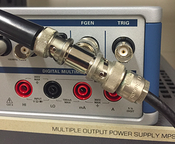

ELEC 240 Lab
Experiment 3.1
Resistive Voltage Dividers
Equipment
- Test board
- Resistors
- 1-kΩ Potentiometer
- BNC T Connector
Part A: Measuring AC Voltage with the DMM
-
Connect the BNC T-connector to
CH1of the scope. -
Use a BNC patch cord to connect one end of the T to the
FGENoutput. Connect a BNC clip lead to the other end of the T. -
Set the
FGENto produce a \(2-V\) peak-to-peak, 100Hz sine wave. -
Set the DMM to AC Volts and connect the probes to the clip leads. What is the voltage reading on the DMM?
-
Set the
FGENto produce a square wave. What is the voltage reading on the DMM? -
Reset the
FGENto sine wave. Note the reading on the DMM at 5 Hz, 50 Hz, 500 Hz, 5 kHz, and 50 kHz. -
What is the useful frequency range of the DMM for measuring AC signals?
Note
The AC voltage function of the DMM is calibrated to read (approximately) the RMS value of the waveform. RMS stands for root-mean-square i.e. the square root of the mean value of the square of the function:
\[ V_{rms} = \sqrt{\frac{1}{T}\int_0^T v^2(t) dt} \]We'll see the importance of this when we study power. For now just remember that for a sine wave, \(V_{rms} = 0.707 V_{peak}\).
Part B: The Basic Voltage Divider
-
Wire the following circuit using 10kΩ (brown-black-orange) resistors for both \(R_1\) and \(R_2\):
-
What should the voltage divider ratio (\(\frac{v_{out}}{v_s}\)) be?
-
Set the
FGENto produce a \(2 V_{pp}\) sine wave. -
Measure \(v_{out}\) with the oscilloscope. Is it what you expect?
-
Change \(R_1\) and \(R_2\) to 47Ω (yellow-violet-black). What is the output voltage?
-
Now change \(R_1\) and \(R_2\) to 1MΩ. What is the output voltage?
Note
No circuit exists in isolation. To be useful its input or output (or both) should be connected to some other circuit. Unfortunately the interaction between the circuit and a non-ideal source or load causes it to behave differently than it would in an idealized situation. With careful design, this interaction can be minimized or accounted for. If ignored it can reduce the performance of the system, or keep it from working altogether.
Part C: The Potentiometer
A potentiometer (pot for short) is a fixed value resistor with a third, movable contact or slider which may be positioned anywhere along the resistive element. If we represent the position of the slider by \(\alpha\), where \(\alpha\) varies between 0 (fully counterclockwise) and 1 (fully clockwise), then the resistance between the lower end of the resistor and the slider will be \(\alpha R\) and between the slider and the upper end will be \((1-\alpha)R\), where \(R\) is the total resistance of the potentiometer.
If we connect the two fixed contacts to a voltage source and measure the output between the movable contact and one fixed contact, we get a variable voltage divider:
Then the output is:
\[ v_{out} = \frac{R_2}{R_1 + R_2}v_{in} = \frac{\alpha R}{(1 - \alpha)R + \alpha R}v_{in} = \alpha v_{in} \]-
Select a 10kΩ potentiometer. It will have three short wires sticking out in a triangular pattern. The center terminal is the slider contact and the two outer terminals are the fixed contacts.
Note
Figuring out the value of a pot can be tricky. Some pots are labeled directly with the value (e.g. "100" or "10K"). Others are labeled using the same code as for fixed resistors, except that numbers, rather than colors, are used. For example, a 10kΩ resistor would have the bands brown-black-orange. The values of these colors are 1, 0, and 3, so a 10kΩ pot would have the label "103".
-
Wire the following circuit:
{kind=link}
-
Set the function generator to produce a \(2 V_{pp}\) 100-Hz sine wave.
-
Using a screwdriver from your toolkit, turn the crosshairs on the potentiometer to the midpoint. Note down \(v_{out}\).
- The pot has a scale divided into 10 equal divisions, presumably representing 10 equal divisions of resistance. Set the pot to each of these 10 divisions and measure \(v_{out}\). Is this presumption correct? If the pot you selected does not have division markings, approximate 4-6 equal divisions and do the measurements.